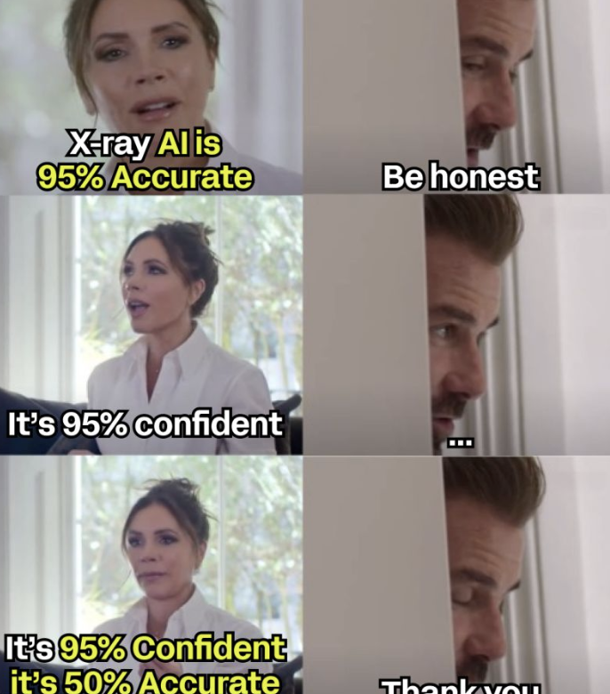
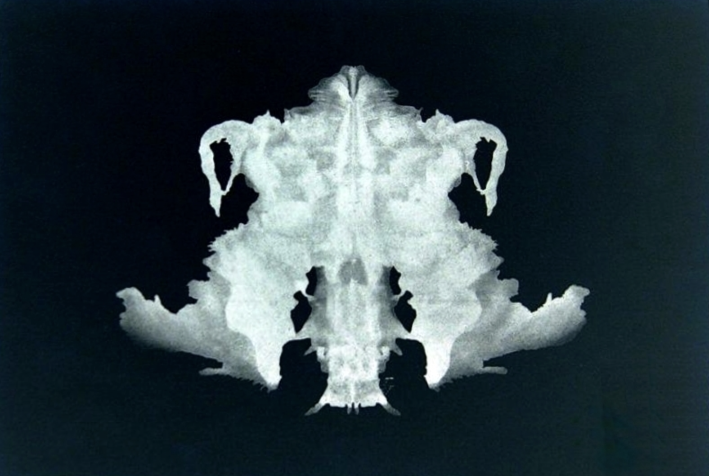
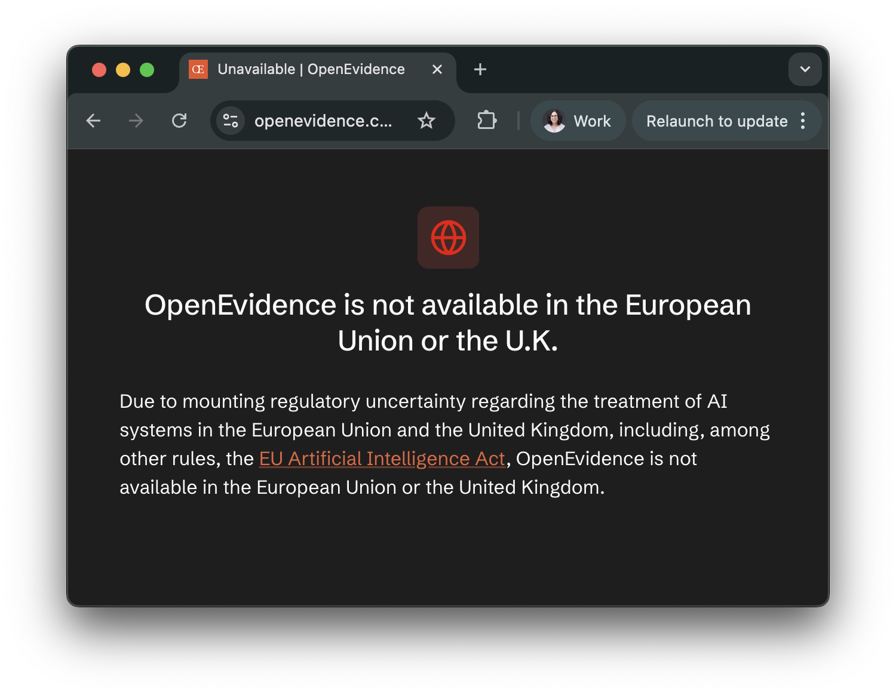
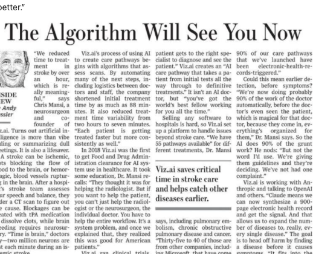
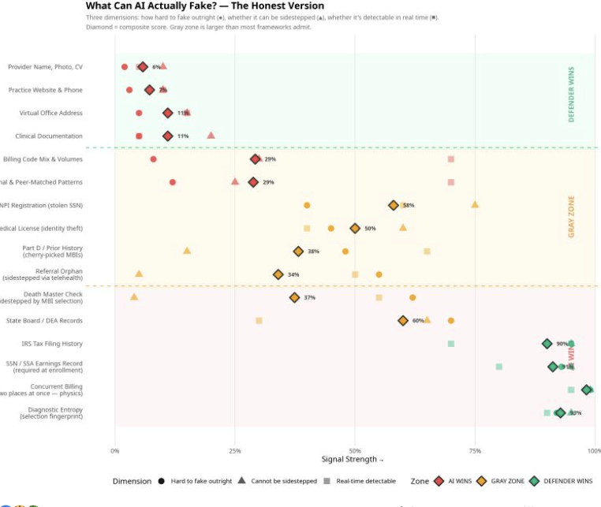

Cases, the Bedside, and the Law
"How many of you used an LLM this week? And how would you know if it wasn't a good call?"
Not rhetorical. It's where this session lives.
A strip at the top of every slide will keep these five labels in front of you.
Against what ground truth?
"Almost all of medicine is trying to get from 95% to 96, or 97. We spend trillions of dollars on it."
— Graham Walker, MD
Human biology is resilient. You can do many things to many people and 95% of them will be fine.
Headlines saying "AI 95% successful in pilot" tell us almost nothing about what the work actually requires. Medicine lives in the margins between 95% and 97%, and that's where the trillions go.
An algorithm that always refills any SSRI prescription, no clinical review.
What's its success rate?
≥ 95%
Because most patients on long-term SSRIs are stable. Most refill cycles don't require intervention. Most prescriptions aren't actively harmful.
A "95% successful" headline says nothing about whether any of these cases were caught.
"'95% sensitivity' doesn't mean the AI finds 95% of disease. It means the AI agrees with dentists reading the same X-ray 95% of the time."
— Dr. Chris Ciriello, on FDA 510(k) filings for dental X-ray AI

Meme via Dr. Chris Ciriello on LinkedIn — re-aggregated by Andrew Harrison
Modality sensitivity (X-ray for caries vs. histology): ~50%.
AI concordance with dentists (what FDA 510(k) measures): ~95%.
End-to-end detection: ~47.5%.
"They're 95% confident the system is 50% accurate."
Once you ask "compared with what?" you can't stop:
Concordance with an imperfect proxy is not the same as clinical reality.
"The numbers looked precise, beat-to-beat. Underneath, the device was tracking the last cuff reading."
Microsoft 2022 cuffless BP study: 1,125 participants. Zero added value beyond age + sex + last cuff reading.
The wrist device was calibrated to a cuff reading on first use. After that, it tracked changes relative to that anchor.
As physiology drifted, the anchor stayed put. Performance looked stable in the data because the data were aligned to the anchor.
The field calls this regression to calibration.
The model stays anchored. The world has moved.
"Precision" in benchmark numbers can be artefact of anchoring — that's the same failure mode in a different domain.
Can LLMs perform like physicians?
Both well-designed. Both in top journals. Opposite conclusions.
OpenAI's o1-preview on NEJM Clinicopathological Conferences (CPCs) + a real-world Boston ER study, hundreds of physicians as baseline.
On the subset where GPT-4 had been tested before, o1-preview correct in 88.6% vs. GPT-4's 72.9% (p = 0.015).
"LLMs have eclipsed most benchmarks of clinical reasoning, motivating the urgent need for prospective trials."
1,298 UK adults, randomised to GPT-4o / Llama 3 / Command R+ — or internet search of their choice (control) — for 10 medical scenarios.
"Standard benchmarks for medical knowledge and simulated patient interactions do not predict the failures we find with human participants."
Same year. Both pre-registered. Both honest.

Same data, two readings. The answer you find depends on where you decided to look.
Brodeur and Bean–Mahdi are both right. The question is which slice of "performance" you measured.
"The benchmark and the bedside live in different worlds."
Performance on the test is one slice. What happens when real people use the system is another. The work is what connects them.
From 94.9% (LLM alone) to 34.5% (humans using LLM), five failure points were located:
Pre-registered RCT, Nature Health 2026, n = 500. Same person reports same symptoms — once to a chatbot, once to a physician.
Mean suitability rating for triage (1–5 scale, physician-validated LLM evaluator, inter-rater ICC = 0.75).
Difference statistically significant under pre-registered analysis.
Every time you hear "X% accuracy",
the first question is the only one that matters:
against what ground truth?
— a thread that runs through the rest of the talk
Where the line is — and isn't.

This is what opens at openevidence.com from anywhere in the EU or UK today.
OpenEvidence is a medical search engine with AI-synthesised answers, popular with US clinicians — where it remains live.
In the EU and UK it was available. It withdrew in 2026, citing the EU AI Act and adjacent regulation.
You can ask ChatGPT, Gemini, Claude — from your phone, right now, in this room — exactly the kinds of clinical questions OpenEvidence was set up to answer.
They'll answer.
None of them are blocked. None of them call themselves medical devices.
So what is the line?
"What turns information into a medical device is two things: the output is shaped to a specific clinical question, and the manufacturer presents it as supporting a diagnostic or therapeutic decision."
The same input may or may not count as a "clinical question" — it depends on whose product is answering and how the manufacturer declared its purpose.
"Facilitate the safe, responsible and effective use of LLMs."
Gradual, principle-based framework. Articulates with AI Act + MDR. OpenEvidence withdrew from the EU/UK in 2026.
"Congress should NOT create any new federal rulemaking body to regulate AI."
Federal preempts state laws. Sandboxes. Innovation by removing barriers.
"Direct oversight of narrowly focused AI tools coexists with widespread under-the-surface use of consumer AI platforms with uncertain data privacy and security practices."
— Ötleş, Murray, Beecy, Khalessi, Singh. NEJM AI, March 26, 2026 — "Health Systems Govern Only the Tip of the AI Iceberg"
Most of this use happens outside institutional oversight. The frameworks in place today were designed for use-case-specific tools, and the dominant pattern in 2026 is general-purpose chat platforms.
If governance has gaps at the system level, what does the patient inherit?
"AI Act and GDPR give patients legal grounds to seek explanations of AI-driven medical recommendations, but neither framework specifies what a meaningful explanation requires in clinical practice."
— Ankolekar, JMIR 2026 — on the patient's right to understand
Until someone defines a meaningful explanation,
the right to understand is unbuilt infrastructure.
— prompt for the room
In production, in motion, in fraud.
Anthropic
Claude for Healthcare
Jan 11
OpenAI
ChatGPT → for Clinicians
Jan 7 / Apr 22
Microsoft
Copilot Health + MAI-DxO
Mar 12
Amazon
One Medical Health AI
Jan 21 · 200M Prime
Google DeepMind
Multimodal co-clinician
Apr 30
Salesforce + Epic
Agentforce + EHR agents
Mar / Apr
AWS
Connect Health (agentic)
May 5
Verily
Lightpath chronic care
Mar / Apr
Four months. Eight production launches. Different governance regimes.

"The Algorithm Will See You Now" — shared by Michael Bass
A clinical workflow already running across most of US emergency stroke care.
"AI can mimic humans, operate computers, navigate complex workflows. Paired with stolen identity data, it can literally be you."
— Yubin Park, on vibe-coded healthcare fraud

"What Can AI Actually Fake?" — Yubin Park
The Q1 2026 launches deliver capabilities. Capabilities are fungible.
What enables a workflow agent enables a fraud agent.
Detectors that still work: IRS filing history, SSA earnings, billing physics, "diagnostic entropy fingerprints".
What we cite — and whether it exists.
"4,046 fabricated citations in 2,810 papers. 1 in 277 papers in Q1 2026 contained at least one fabricated reference. 12× growth since 2023."
— Topaz et al., The Lancet 2026
Density of fabricated references over time, biomedical literature:
2,471,758
papers audited (PMC Open Access)
125.6M
references analysed
98.4%
of affected papers had no publisher action
+57% fabrication rate in review articles vs primary papers (p < 0.0001).
A researcher invented a fake disease. Acknowledged "Professor Sideshow Bob". Wrote in the methods "this entire paper is made up". Posted as a preprint.
Four major AI chatbots told patients bixonimania was real.
The peer-reviewed paper that cited the fake preprints as "emerging clinical condition" was only retracted after Nature contacted the journal.
Real fabricated references don't come with a confession. They look correct.
"To audit 2.5 million papers and find LLM-generated fabricated citations, Topaz et al. used Claude 3.5 Haiku."
AI defending the evidence base from AI. Is that a lot, or a little?
If references are unreliable, can LLMs at least assess methodological quality? Nyrhi et al. tested 4 frontier models against published Cochrane RoB judgements:
| Model | RoB 1 κ | RoB 2 κ |
|---|---|---|
| DeepSeek v3 | 0.39 | 0.09 |
| ChatGPT o3 | 0.36 | 0.06 |
| Grok 3 | 0.34 | 0.10 |
| Gemini Flash 2.0 | 0.27 | 0.13 |
Sensitivity 0.05–0.55. Models systematically over-flag. Authors: "None sufficiently reliable for fully autonomous RoB assessment."
If references can't be trusted
and review-grade reasoning can't yet be delegated,
what stays of our ability to interpret what we read?
— prompt for the room
Deskilling, dependence, drift.
"Endoscopists who used AI for months and then worked without it: adenoma detection rate dropped from 28.4% to 22.4%."
— Heudel et al. ESMO RWD 2026
UK cytology after HPV primary screening: workloads down 80–85%, labs cut from 45 to 8. Training capacity for junior pathologists nearly disappeared.
If the model gets better and the clinician gets worse, what is the clinical encounter in 2030?
Every clinician here was trained by working through cases
where the easy step was deferred to no one.
What replaces that pipeline?
— prompt for the room
marianacpais@gmail.com